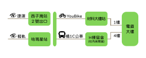
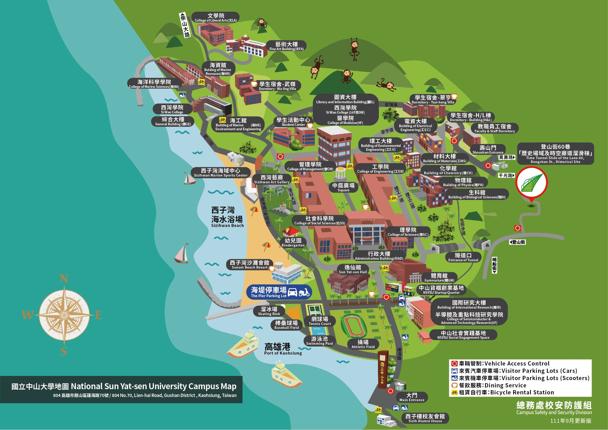
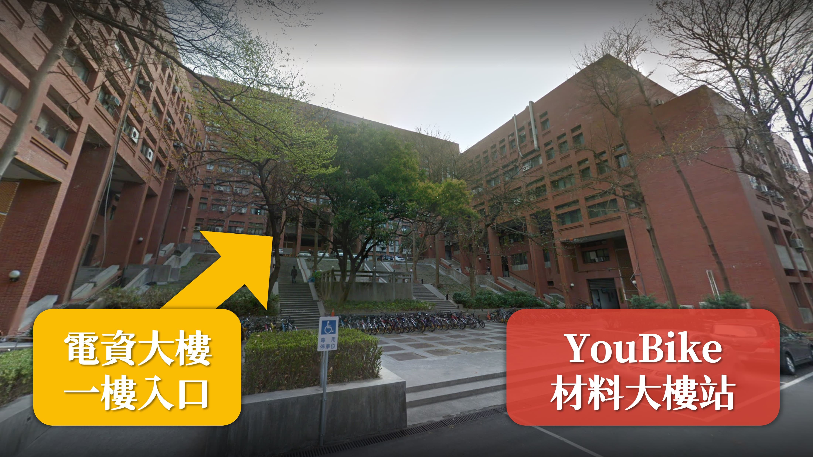

YouBike
- 可於 捷運 西子灣站 、輕軌 哈瑪星站 ，或其他站點，租借 YouBike。
- 騎經 中山大學隧道口 後右轉，騎行至底再次右轉，即可於 材料大樓站 歸還 YouBike。
- 沿著樓梯向上走，即可抵達電資大樓一樓。

汽車
中山大學腹地狹小，且來賓停車場與活動會場有一定距離，建議改搭乘大眾運輸工具前往。
- 汽車可停放至中山大學 海堤停車場 或 國研停車場。
- 步行至 行政大樓站 轉乘 橘1C 公車，並於 H棟宿舍 (電資大樓) 下車。
- 海堤停車場：小型車每半小時15元，當日最高收費為150元。
- 國研停車場：小型車每半小時15元，當日最高收費為240元。
詳細停車場位置，及收費標準，敬請參考：
來賓汽機車停車場地圖
車輛管理要點施行細則